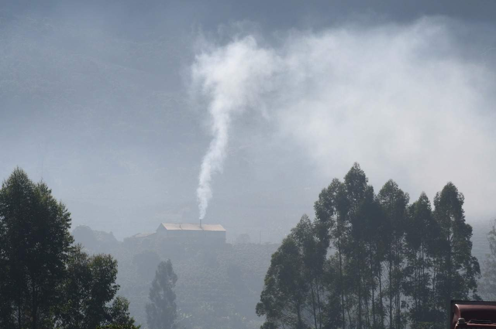

O mundo enfrenta desafios ambientais cada vez mais urgentes, e é nossa responsabilidade coletiva adotar práticas que promovam a preservação do planeta. Em um cenário onde as mudanças climáticas, a degradação dos recursos naturais e a poluição ameaçam o equilíbrio ecológico, a implementação de tecnologias e máquinas ecologicamente corretas se torna essencial. Essas soluções não apenas reduzem a emissão de poluentes e o consumo de recursos não renováveis, mas também contribuem para a eficiência e a sustentabilidade das operações.
No setor agrícola, especialmente, a adoção de práticas sustentáveis pode ter um impacto transformador. Máquinas projetadas para minimizar o uso de água, energia e produtos químicos não apenas ajudam a preservar os recursos naturais, mas também melhoram a qualidade do solo e das colheitas. Tecnologias avançadas, como sistemas de irrigação inteligente, tratores com menor emissão de gases e equipamentos que utilizam energia renovável, são exemplos de como a inovação pode harmonizar a produtividade com a proteção ambiental.
Clique aqui